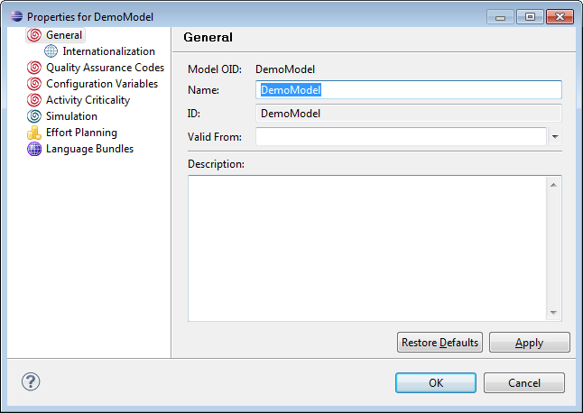
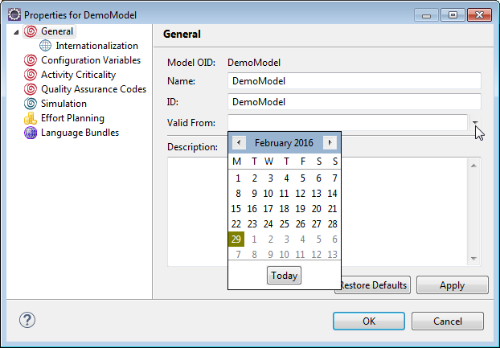

Model properties can be viewed or modified in the model properties dialog.
You can edit and view model properties in the model properties dialog.

Figure: Setting or Viewing Properties of a Model
Besides the main general properties for name, ID and description, which are described in section General Properties of chapter Viewing and Editing Properties of Models and Model Elements, you can enter a validity period for the model. This is defined by date entry specifying the beginning of the validity period. To specify a validity date, enter a date directly in the Valid From entry field or click the drop-down error to open and select a date from the calendar.

Figure: Select Validity
The description entered for a the model is displayed as tooltip text in the Stardust Portal when you hover the mouse over the model name.
The following specific properties are available for models: